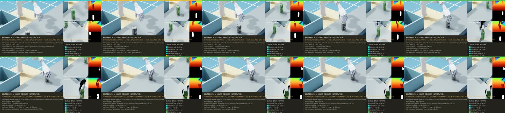

비침투 guarded command를 PhysX articulation servo로 실행하고 12-joint hand feedback까지 닫는다.
정지 robot state에서 움직이는 물체를 추적하는 command로 이어지는 piecewise-quintic C2 splice를 만들고, pregrasp → close_above_object → first contact 구간을 다시 HPP-FCL로 검증했다. RTX 3090의 Isaac Sim 4.5에서는 xArm6와 Inspire Left에 실제 position target을 보내고 PhysX articulation state를 60 Hz로 읽었다. 사전 선언한 마지막 반복 r48은 actual RGB-D perception, exact-track selection, 12-joint hand servo와 19초 영상을 모두 통과했다.
D1 measured sensor track → D2 sampled command selection → D3a measured joint position servo가 같은 실행에서 연결됐다. execution_authorized=false이며 velocity feedback, swept collision, contact force, object dynamics, physical attachment와 hardware authority는 없다. 화면의 grasp·이송은 검증된 reference에 따른 articulation 진단이지 물리 grasp 성공 증거가 아니다.1280×720 · 15 fps · 285 frame · 19.000초 · SHA-256 d7e785e7af539ac435de6a7249082f1b233d60d6fa943e5f95d952f389640a2b

연결한 실행 경계
| 단계 | 실행한 모듈 | 확보하지 않은 권한 |
|---|---|---|
| D1 · perception | 두 Isaac RGB-D·instance mask, one-shot FoundPose yaw, translation-only CAD XY와 60 Hz encoder prediction | Object identity와 upside-down stable pose는 사전 지정했다. Simulator truth는 오차 평가에만 사용했다. |
| D2 · selection | Live track과 source-closed r46 profile의 identity·속도·lateral·yaw·uncertainty·start lead를 비교 | Online global planning이나 새 grasp 생성이 아니라 exact prevalidated profile의 bounded query다. |
| D3a · servo | C2 actual-time arm/hand position target, 60 Hz PhysX state feedback, 6 arm joint와 URDF mimic을 펼친 12 hand joint 추종 | Velocity는 측정하지 않았고 contact sensor·attachment·release·object dynamics를 연결하지 않았다. |
| Collision evidence | 283/283 sampled HPP-FCL과 159-frame guarded interval audit | Sampled exact-mesh 결과이며 continuous swept collision authority가 아니다. |
비침투 C2 command
- 정지 시작: 이전 moving source의 첫 nonzero derivative를 그대로 시작 상태로 쓰지 않고 stationary hold에서 position·velocity·acceleration이 이어지는 C2 prefix를 생성했다.
- Guarded 상태:
pregrasp전은 clearance,pregrasp부터 first contact 전은 nominal nonpenetrating guarded proximity, 이후만 bounded contact로 유지했다.close_above_object까지 pregrasp hand command를 보존한다. - Actual-time reference: 201 waypoint를 283 playback frame으로 만들었다. 총 command는 9.4초이며 전체 simulation clock에서 4.755초에 시작하고 13.855초에 declared contact에 도달한다.
- 독립 검증: 283/283 frame이 HPP-FCL을 통과했다. 159개 guarded frame의 minimum signed robot-object distance는
0.019073 mm로 양수였고 조기 contact나 침투를 허용하지 않았다.
Inspire mimic 실패와 수정
첫 articulation 통합은 arm target과 영상 285 tick을 모두 처리했지만 hand 최대 오차가 0.314 rad로 실패했다. 처음에는 joint index 또는 gain 적용 오류를 의심했다. Free-space target, collision-disabled run과 target readback에서는 index가 맞았고, 중력을 제거하면 drift가 사라졌다. 중력 조건의 PhysX state를 URDF mimic 식과 직접 대조하자 importer가 만든 mimic articulation이 multiplier 관계를 유지하지 못했다.
- Combined assembly URDF에서 6개 독립 hand command joint와 모든 mimic descendant를 추출하는 end-effector model을 추가했다.
- Isaac URDF import의 mimic parsing을 끄고, 매 control tick에 URDF multiplier와 offset으로 12개 movable hand target을 명시적으로 계산했다.
- 추종 gate도 6개 command joint가 아니라 실제로 구동한 12개 joint 전체로 바꿨다. Gain과 positive effort readback이 일치하지 않으면 시작 전에 실패하도록 했다.
- RTX 중력 시험으로만 provisional gain을 식별했다. Arm은
kp=12000, kd=380, hand는kp=40000, kd=1이며 기존 오차 기준0.05/0.10 rad은 완화하지 않았다.
실패와 해결 연대기
| 관찰 | 원인 또는 판정 | 조치와 결과 |
|---|---|---|
| 초기 C2 generation이 서버 코드와 다른 동작을 냈다. | Server HPP 환경의 editable install이 이전 checkout을 가리켰다. | 동일 checkout을 pip install --no-deps -e로 다시 결속한 뒤 r46을 처음부터 생성했다. |
r45가 arm gate와 285 video tick은 통과했지만 hand error 0.314 rad로 실패했다. | 단순 command joint target만으로 PhysX mimic descendant의 중력 drift를 제어하지 못했다. | Mimic 관계를 명시적 12-joint target으로 펼치고 full-joint feedback gate를 적용했다. |
| 5초 stationary full-hand hold | 수정 경로의 최소 분리 검증이다. | 300 sample에서 arm 0.01435 rad, hand 0.02187 rad; command/feedback deadline을 모두 통과했다. |
| 9.4초 full C2 분리 실행 | 통합 perception 전에 source reference 전체를 검증했다. | 564 sample에서 arm 0.02002 rad, hand 0.02274 rad; command max 0.229 ms, feedback max 0.241 ms였다. |
r47 authority가 yaw gate만 실패했다. | FoundPose yaw error 0.09838 rad가 command gate 0.08 rad를 넘었다. Position error는 2.32 mm였다. | Threshold를 늘리거나 유리한 결과만 채택하지 않고 실패 run을 보존했다. 추가 반복은 사전에 한 번으로 제한했다. |
r48 authority와 presentation | Authority yaw error 0.00109 rad, presentation reacquisition yaw error 0.00819 rad로 같은 gate를 통과했다. | 사전 선언한 마지막 반복을 채택했다. One-shot FoundPose의 전체 강건성이 해결됐다는 뜻은 아니다. |
r48 실제 시간 결과
| 항목 | 결과 | 해석 |
|---|---|---|
| Perception | Acquisition 0.883초, track position max 5.60 mm, yaw max 0.00819 rad | Simulator truth는 평가 전용이며 command 입력에 사용하지 않았다. |
| CAD / ingress | CAD 169회, p95 13.93 ms, max 17.63 ms; ingress deadline miss 0 | FoundPose GPU reservation과 Isaac render는 single-GPU schedule로 분리했다. |
| D2 query | 9회, p95 0.082 ms; generation 9에서 선택 | 직전 generation은 uncertainty가 커 fail-closed됐고 같은 profile이 이후 track에 admit됐다. |
| Articulation feedback | 1,140 sample; arm max 0.02002 rad, 12-joint hand max 0.02274 rad | Command max 0.389 ms, feedback max 0.578 ms로 각각 2 ms gate 안이다. |
| Control timing | RTF 0.99955, wall-lateness p95 43.38 ms, max 77.46 ms | 한 RTX 3090 soft real-time 결과이며 hard real-time 보장은 아니다. |
| Presentation | RTF 0.97489, 285/285 encoded, drop/error 0 | 19초 MP4는 권위 report를 해시로 참조한다. |
테스트와 source closure
End-effector model, explicit mimic target, importer policy, servo readback과 staged presentation을 다루는 집중 회귀 36개가 통과했다. 전체 CPU suite 1,092개 중 1,071개가 통과하고 18개가 skip됐다. 나머지 3개 error는 현재 WSL이 Linux memfd를 제공하지 않아 발생한 기존 FoundPose worker process 환경 오류이며 이번 assertion regression은 아니다.
구현은 96e1381 stationary splice source closure, fa5e4c5 C2 articulation edge, adedcc4 explicit full-hand mimic servo로 단계별 push했다. 최종 영상과 presentation report의 파일 SHA-256은 각각 d7e785e7af539ac435de6a7249082f1b233d60d6fa943e5f95d952f389640a2b, 7de664b97b42ca433a3eb4de494f4a593a1f4ff2082d1c8f34996812720016d9다.
남은 blocker
- FoundPose qualification 12개 yaw의 최대 오차는
0.10180 rad이고r47도 0.08 rad gate를 실패했다. 다음 perception 작업은 temporal consensus만 덧붙이는 것이 아니라 multi-view likelihood와 no-pick 비용을 포함한 독립 holdout 재검증이어야 한다. - HPP-FCL 283/283은 sampled evidence다. Exact remaining command에 대한 검증된 GPU swept-collision gate와 false-negative 시험이 있어야 execution candidate로 승격할 수 있다.
- D3b는 contact sensor, object free dynamics, grasp attachment 판정, release와 bin containment를 같은 measured trace에 기록해야 한다. 현재 영상의 물체 이동을 physical attachment로 해석하지 않는다.
- Isaac용 provisional gain을 실제 xArm/Inspire controller에 복사하지 않는다. Hardware 단계에서는 vendor interface의 command/feedback clock, effort/current, protective stop과 connector seating을 별도 qualification한다.
ISSUE-081 guarded Isaac presentation · ISSUE-079 guarded source closure · ISSUE-040 cuRobo audit